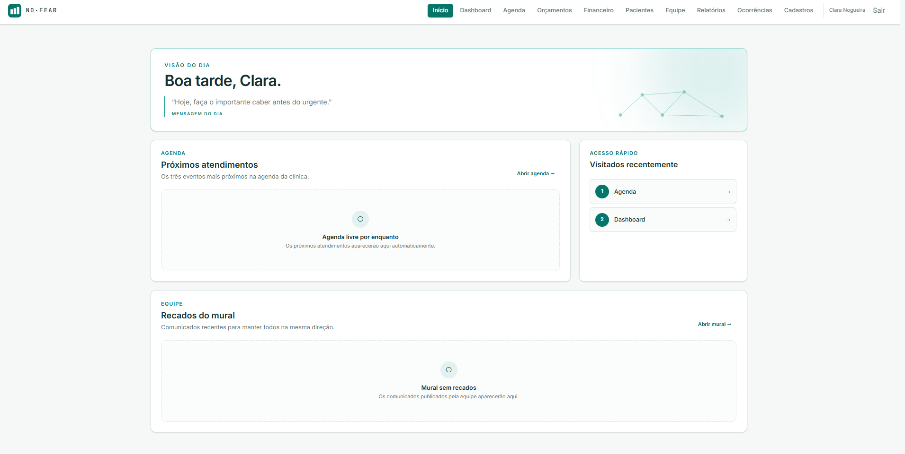
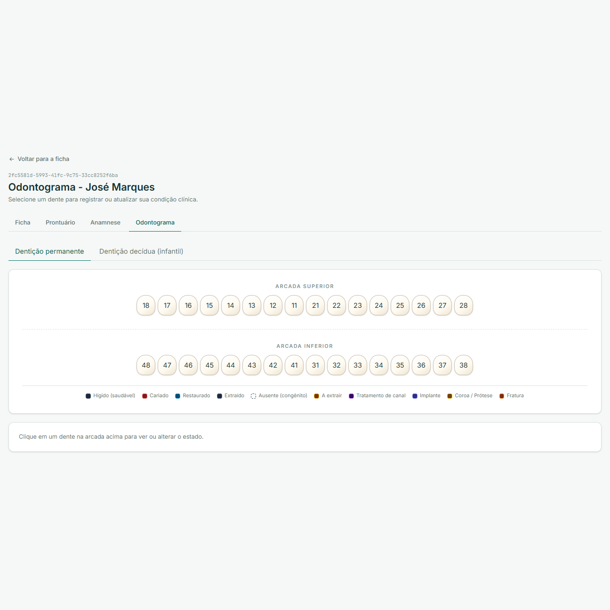
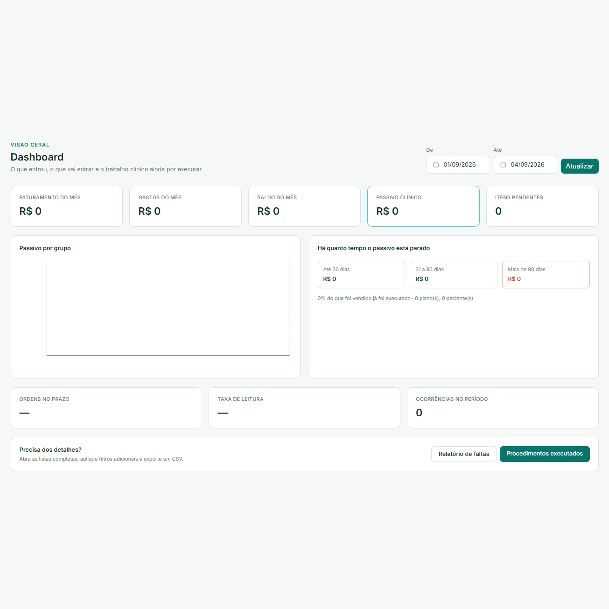

Gestão de clínica odontológica
Back-end · 2026
Feito em Equipe: 2 Backend e 2 Frontend
Cliente No Fear

O problema
Agenda, prontuário e financeiro no mesmo lugar — com registro clínico que não se edita e dado que não passa de uma clínica para a outra.
O que construí
Software de gestão em produção: agenda por cadeira, prontuário, odontograma, orçamento, financeiro e equipe.
Multi-tenancy no banco. Cada clínica é um tenant, isolada por Row Level Security do PostgreSQL — não por WHERE.
Prontuário append-only. Um gatilho impede editar ou apagar; corrigir é escrever a versão seguinte.
Permissão por papel. Cinco papéis. A interface esconde; quem barra é a API, com 403.
Stack
FastAPI
PostgreSQL 16
SQLAlchemy
Alembic
React
Vite
Tailwind
Docker
Caddy
21 migrações versionadas. Tudo em Docker, atrás do Caddy com TLS automático, em VPS Linux.
Resultado
Em produção, da agenda ao caixa
Código
Repositório privado do cliente.

